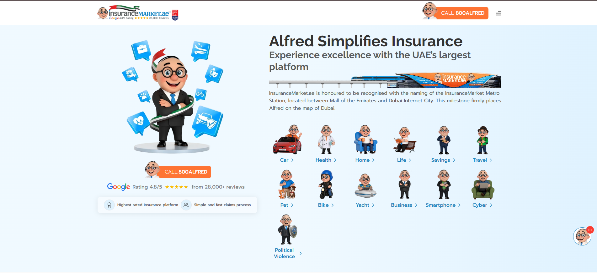

★ featured · 2024 — present
InsuranceMarket.ae
Frontend Engineer — Remote (Dubai)
A dual-application insurance platform: a 270+ page SEO-driven content site plus a transactional e-commerce system. Routed via Next.js rewrites at the infrastructure level, with headless WordPress (ISR + revalidation), next-intl i18n, and AI-powered OCR for document onboarding.
270+
pages, SEO-driven
v12 → 15
Next.js migration
i18n
page-wise loading
Next.jsTypeScriptheadless CMSISRnext-intlpaymentsOCR